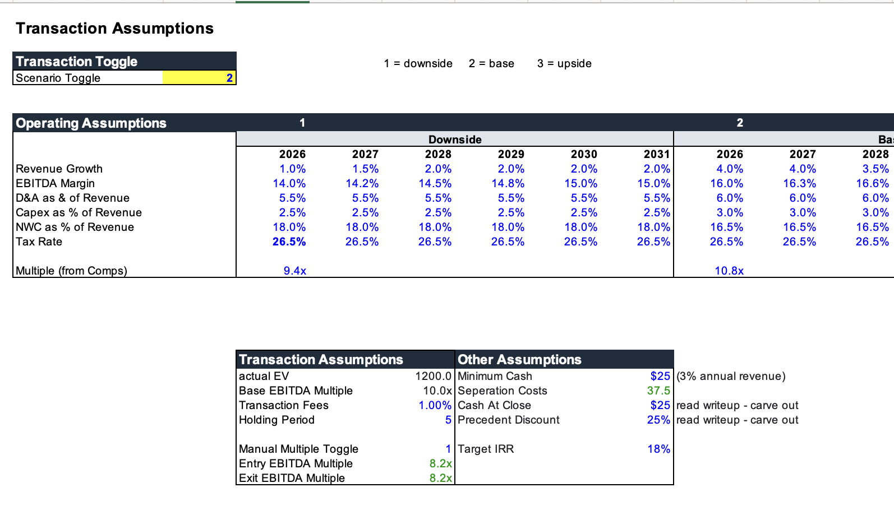
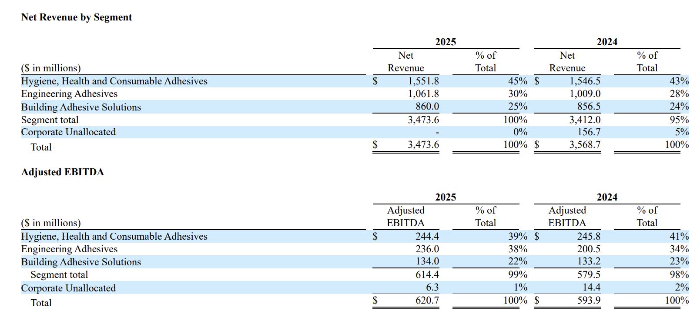
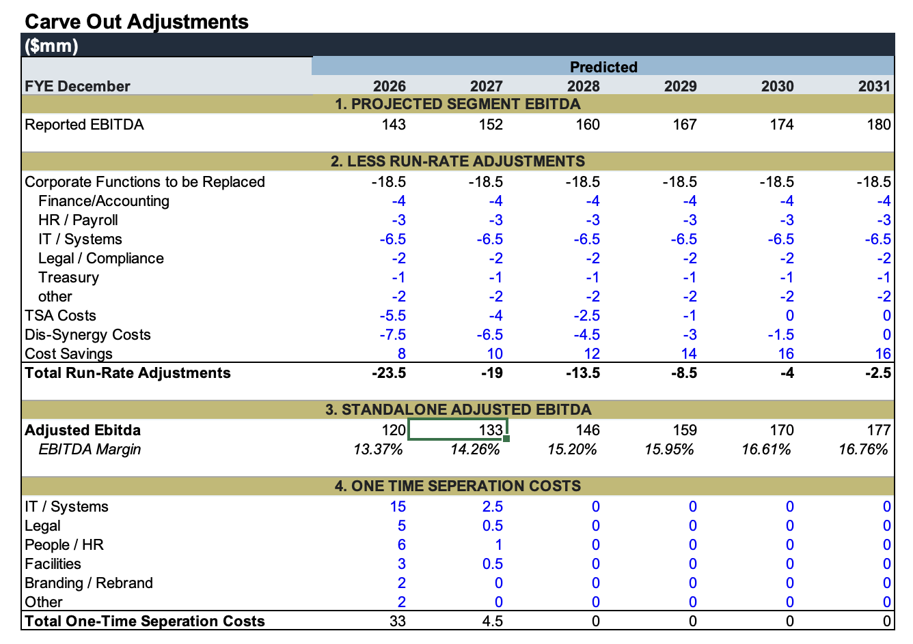
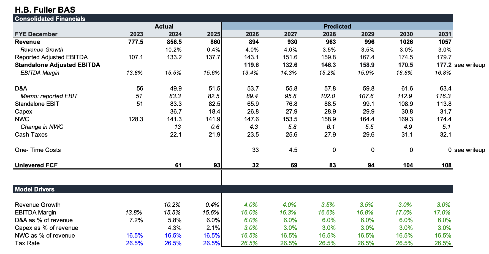
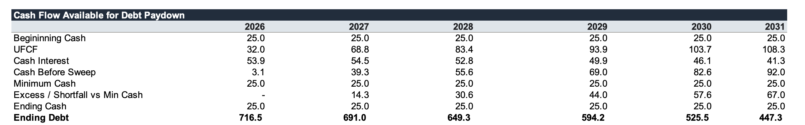
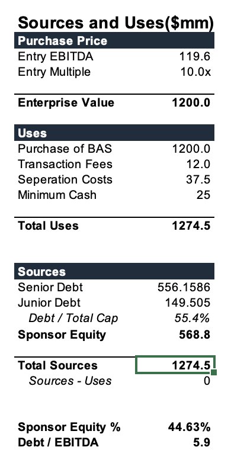
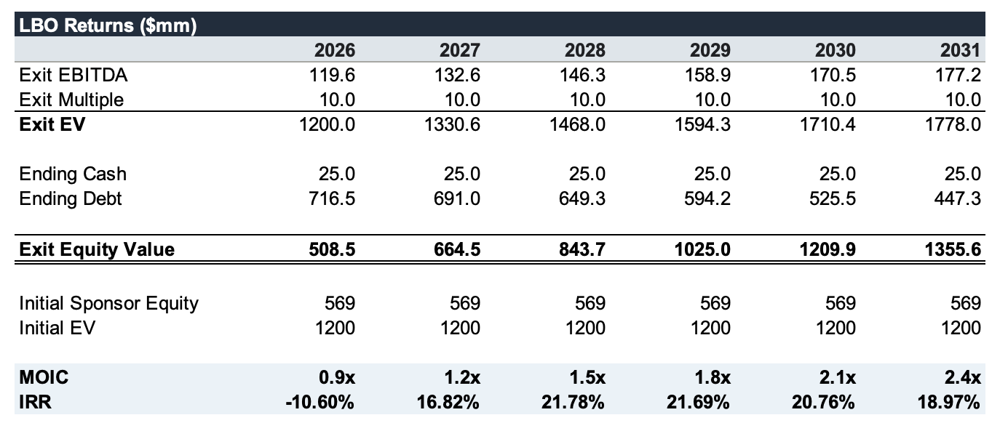
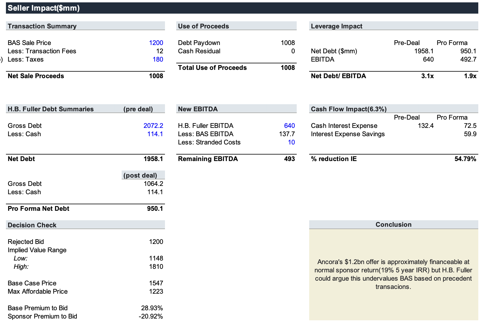

Analyzing H.B. Fuller's Rejected $1.2bn BAS Bid
In August of 2026, H.B. Fuller’s Board of Directors unanimously rejected a cash offer from Ancora Group Holdings, looking to buy its Building Adhesive Solutions (BAS) segment for $1.1 billion to $1.2 billion. Ancora is a wealth management firm with a 2% stake in H.B. Fuller, while H.B. Fuller has balance sheet constraints with Net Debt / EBITDA over 3.1x. This model is a sponsor-style underwriting detailing the full BAS carveout, impact to H.B. Fuller, and potential returns for Ancora at a $1.2 billion price.
Executive Summary
Ancora's $1.2bn offer is approximately financeable at a normal sponsor return (19% 5-year IRR), but H.B. Fuller could argue this undervalues BAS based on precedent transactions, which is consistent with H.B. Fuller’s stated view that the proposal undervalues BAS.
It is highly recommended that you download this spreadsheet.
Executive Summary
Ancora wants BAS the business for a multitude of reasons. H.B. Fuller’s BAS has increasing EBITDA margins with a strong path to higher margins given their Quantum Leap initiative, whilst being in attractive end markets like construction / HVAC. Project Quantum Leap is an initiative to drive EBITDA margins over 20% by portfolio management, sourcing efficiencies, and pricing, among other things. As a standalone business, BAS may be easier to value and operate more efficiently. Finally, Ancora owns 2% of H.B. Fuller, and a sale could allow H.B. Fuller to deleverage which could benefit Ancora as an existing shareholder.
On the other hand, H.B. Fuller might want to sell to reduce their high leverage. 3.1x Net Debt / EBITDA. The real question for H.B. Fuller is whether or not this balance sheet improvement is worth giving up BAS’s future earnings and growth.
Which it wasn’t. H.B. Fuller unanimously rejected the bid claiming BAS was undervalued. They cited 2026 performance, Project Quantum Leap, and precedent transaction valuations as a basis for this. Furthermore, BAS is integrated with the rest of H.B. Fuller, making it complex and leading to dis-synergies.
I found this model particularly engaging because it was able to showcase the deal from both H.B. Fuller’s side and Ancora’s side. The two final outputs, Seller Impact and LBO Returns Exit, show Ancora’s returns using a $1.2bn sales price and H.B. Fuller’s point of view using precedent transaction analyses and evaluation of BAS operating projections. While Ancora sees $1.2bn as enough to compensate H.B. Fuller for BAS in order to support a meaningful return, Fuller believes BAS’s improving earnings and value justify a higher price.
Assumptions

There are three toggleable cases driving the model, based on numbers from previous earnings. The downside case assumes an unusually low growth rate as the company runs into weaker construction demand. The base case assumes persistent revenue growth (4%), eventually tapering to 3% after an unusually strong Q1-Q2 2026. Finally, the upside case assumes a very strong end to 2026, with the business eventually tapering off slightly.

I assume slight EBITDA margin growth due to Project Quantum Leap and past EBITDA margin growth success. H.B. Fuller is pushing for a 20% EBITDA margin in the long run, and an already increasing EBITDA margin since 2023 makes me optimistic about consistent operational improvements.
16.5% of NWC to BAS is an operational assumption from the company-wide 15.8%. CapEx is also based on the average from the last two previous years. Finally, the D&A base case is also the mean from the last 3 years.
A really important detail I want to mention is the precedent discount / carve-out %. Since each downside/base/upside case has its own multiplier based on precedent transactions, the multiplier is reflective of the deal announcement multiple, not the carve-out multiple. This matters because sponsor returns are typically calculated with the carve-out EBITDA, and so not using a carve-out % discount to the comparison multiples would overstate the true model multiples. Model multiples are for the standalone adjusted EBITDA, NOT the projected segment EBITDA. I landed on a carve-out % of 25% to reflect less scale and strategic buyer premiums dominating the comparable company set.
BAS Carveout
This part of the sheet creates a standalone adjusted EBITDA in order to feed the deal model. I’d like to be upfront and state that the run-rate adjustments are not super defensible. I used this Deloitte report, which states that 72% of businesses have one-time separation costs of 4-7% of divested business revenue. Using that, I backwards engineered appropriate amounts for cost savings, dis-synergy costs, costs associated with replacing corporate functions, as well as TSA costs.

A weakness of the model is the run-rate bridge. This substantially impacts UFCF and is somewhat arbitrary. If I had management access, I’d replace these assumptions with far more defensible amounts based on actual corporate allocations.
The resulting standalone adjusted EBITDA is then fed into the H.B. Fuller BAS Operating tab in order to calculate UFCF. Furthermore, the reported adjusted EBITDA is what feeds this tab, which is changed by the run-rate adjustments. At a bid of $1.2bn, the entry EBITDA multiple (using standalone EBITDA) would be approximately 10x.
H.B. Fuller BAS Operating Tab

BAS is projected to reach $1,057M in revenue by 2031, with standalone adjusted EBITDA of 177.2. I’ve included both reported adjusted EBITDA and standalone adjusted EBITDA in order to make this easy for the viewer, but standalone adjusted EBITDA is being used for all calculations. Unlevered Free Cash Flow is projected to hit 108 by year 2031, on the back of revenue and EBITDA growth as well as cost savings being fully realized.
Sources and Uses / Debt Schedule
I assume a leverage ratio of 5.9x, which is pretty typical for LBOs, with three tranches: senior, junior, and revolver. I assume roughly 4x more senior debt than junior debt and no revolver. The revolver is only used if cash falls below the minimum reserve requirement.

Unlike previous models, I did not use a VBA macro for this. It felt too complicated for 3 generalized debt tranches. Interest rates were assumptions and partly determined from Ancora’s other outstanding debt, as they have mezz at 11.25%. From 2026 to 2031, debt decreased from $716.5M originally to $447.3M, a 38% decrease.

Total Uses sums to $1,274.5M, factoring in separation costs from the carveout tab, transaction fees, and a minimum cash balance of $25M, which is ~3% of revenue. For sources, after finding the plug sponsor equity, Ancora Group Holdings would enter the deal with $568.8M of sponsor equity at a Debt / Total Capital of 55% and a Debt / EBITDA of 5.9x.
Precedent Transaction Analysis
I pulled 6 comparable precedent transaction chemical companies from PitchBook with similar geography, EBITDA, and revenue. The two strongest comps are Henry Company and Chase. Henry Company provides strong end-market compatibility through its building-envelope and roofing exposure, although it was acquired by a strategic buyer. On the other hand, Chase is a specialty materials company with coatings and sealants that was acquired by a sponsor buyer.
LBO Returns Exit / Seller Impact
This is an overall look at the transaction, not necessarily just the buy or sell side. These personal projects have given me a unique perspective into how the deal affects both sides.

Let’s start with Ancora. After a 5-year hold period, a financial sponsor underwriting Ancora’s $1.2bn bid could generate an IRR of 18.97% and a MOIC of 2.4x in the base case. This is close to the target IRR of 18% and is financeable at a normal sponsor return. Exit equity value would be $1,355.6M, with $447.3M in ending debt.

The seller impact tells a more impactful story. After projecting out financials and looking at comparable carve-out multiples, a $1.2bn bid substantially undervalues H.B. Fuller’s BAS segment. Although Net Debt / EBITDA would drop from 3.1x to 1.9x with a 54% reduction in interest expense, the base case price of H.B. Fuller’s BAS is approximately 28.93% higher than the proposed bid. This makes sense given H.B. Fuller’s unanimous rejection. The implied valuation range for my downside/upside case multiples is between $1.14bn and $1.81bn. Although H.B. Fuller’s net debt is reduced from $1.9bn to $950m, they would still be selling their BAS segment for less than it is worth. Ancora’s maximum price to achieve an 18% IRR would be $1.223 billion.